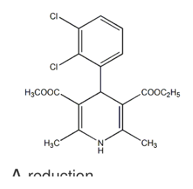
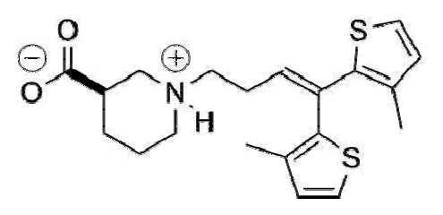
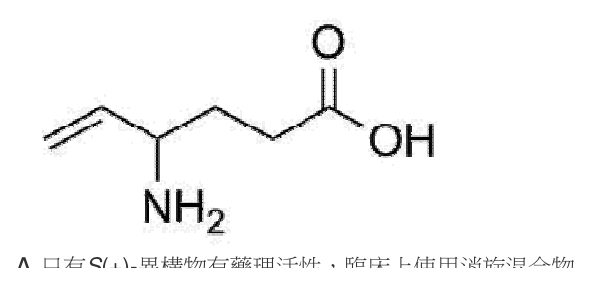
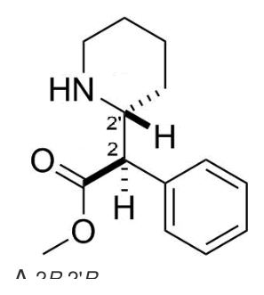
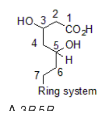

107 年第 1 次藥師藥理學與藥物化學試題與答案
這一頁是民國 107 年第 1 次藥師藥理學與藥物化學的整份歷屆試題，共 80 題，題目與標準答案出自考選部「國家考試試題及測驗式試題答案」開放資料。以下逐題列出題幹、選項與答案；要計時作答或記錄成績，請用線上練習。
考選部原始場次代碼：107020
線上作答這一科 →
全部 80 題
第 1 題
有一60公斤重之病人，其theophylline之廓清率為0.2 L/kg/hr，其分布體積（volume of distribution）為0.5 L/kg。若要馬上達到血中濃度為15 mg/L，則其loading dose應該是：
- （A）450 mg
- （B）300 mg
- （C）180 mg
- （D）150 mg
答案：（A）
第 2 題
下列給藥方式中，何者的生體可用率（bioavailability）最高？
- （A）口服
- （B）肌肉注射法
- （C）靜脈注射法
- （D）吸入法
答案：（C）
第 3 題
下列何種藥物會與其作用之標的（target）產生共價結合？
- （A）Phenoxybenzamine
- （B）Phenylephrine
- （C）Physostigmine
- （D）Pilocarpine
答案：（A）
第 4 題待校
下列藥物何者不適用於治療腎臟癌？
- （A）Bevacizumab
- （B）Imatinib
- （C）Sorafenib
- （D）Sunitinib
答案：（B）
第 5 題
下列何種藥物可抑制人類免疫缺乏病毒（Human immunodeficiency virus）之反轉錄酶（Reverse transcriptase），可作為愛滋病治療用藥？
- （A）Acyclovir
- （B）Amantadine
- （C）Ganciclovir
- （D）Zidovudine
答案：（D）
第 6 題
下列藥物何者不是治療慢性骨髓性白血病？
- （A）Imatinib
- （B）Dasatinib
- （C）Gefitinib
- （D）Nilotinib
答案：（C）
第 7 題
下列何種藥物不屬於alkylating agents？
- （A）Cyclophosphamide
- （B）Carmustine
- （C）Thiotepa
- （D）Fluorouracil
答案：（D）
第 8 題
Levamisole常被用於治療惡性腫瘤，主要係由於下列何種性質？
- （A）副作用少
- （B）吸收快
- （C）不易引起抗藥性
- （D）具免疫調節作用
答案：（D）
第 9 題
下列Azoles類抗黴菌藥物中，何者的吸收良好且主要由腎臟排泄？
- （A）Fluconazole
- （B）Ketoconazole
- （C）Itraconazole
- （D）Voriconazole
答案：（A）
第 10 題
下列何者為作用於factor Xa之口服抗凝血藥物？
- （A）Tirofiban
- （B）Rivaroxaban
- （C）Eptifibatide
- （D）Phenindione
答案：（B）
第 11 題
有關降血脂藥物之敘述，下列何者正確？
- （A）Ezetimibe：離子交換樹脂，與腸胃道內之膽酸結合降低其吸收
- （B）Fenofibrate：過氧化體增生活化受體-alpha（PPAR-α）作用劑
- （C）Cholestyramine：降低肝臟分泌VLDL
- （D）Niacin：抑制HMG-CoA reductase
答案：（B）
第 12 題
重組之活化型凝血因子VIIa（rFVIIa）用於對抗下列何者的使用過量而引致之流血？
- （A）aspirin
- （B）heparin
- （C）ticlopidine
- （D）warfarin
答案：（D）
第 13 題
Fulvestrant藥物其作用機轉為何？
- （A）雌性素（estrogen）受體拮抗劑
- （B）雄性素（androgen）受體拮抗劑
- （C）抑制芳香化酶（aromatase）
- （D）促性腺激素釋放激素（GnRH）致效劑
答案：（A）
第 14 題
下列藥物及其適應症配對，何者最不恰當？
- （A）Prednisone－器官移植
- （B）Dexamethasone－預防早產嬰兒呼吸窘迫症候群（respiratory distress syndrome）
- （C）Hydrocortisone－潰瘍性結腸炎（ulcerative colitis）
- （D）Aspirin－氣喘
答案：（D）
第 15 題
下列何種糖尿病治療用藥可以藉由關閉胰臟β細胞表面之ATP-sensitive potassium channels，進而促使 insulin釋放？
- （A）Glipizide
- （B）Pramlintide
- （C）Metformin
- （D）Pioglitazone
答案：（A）
第 16 題
下列何者為Digoxin用於治療心房纖維顫動的最主要藥理作用機轉？
- （A）減少心房的跳動速率
- （B）減少副交感神經的活性
- （C）增加心房的傳導時間
- （D）增加房室結的不反應期
答案：（D）
第 17 題
下列何者為使用Quinidine常見的副作用？
- （A）便秘
- （B）金雞納中毒
- （C）類紅斑性狼瘡
- （D）甲狀腺機能亢進
答案：（B）
第 18 題
Digoxin對於下列何種病因所造成的心臟衰竭具有最好的治療效果？
- （A）貧血
- （B）原發性高血壓
- （C）甲狀腺機能亢進
- （D）動脈瘤
答案：（B）
第 19 題
下列何者為競爭型endothelin抑制劑，用於治療肺高血壓（Pulmonary hypertension）？
- （A）bosentan
- （B）carperitide
- （C）dobutamine
- （D）levosimendan
答案：（A）
第 20 題
下列何者不是碳酸酐酶（carbonic anhydrase）抑制劑之臨床適應症？
- （A）急性高山症（acute mountain sickness）
- （B）青光眼（glaucoma）
- （C）代謝性酸中毒（metabolic acidosis）
- （D）尿液鹼化（urinary alkalinization）
答案：（C）
第 21 題
下列有關Guanfacine藥理作用的敘述，何者錯誤？
- （A）會活化Imidazoline receptor
- （B）降壓作用受Imipramine抑制
- （C）會使心跳減慢，減少心輸出量
- （D）可減輕憂鬱症病人之病情
答案：（D）
第 22 題
那一種開啟鉀離子管道之藥物會引起多毛症之副作用？
- （A）Nicorandil
- （B）Diazoxide
- （C）Hydralazine
- （D）Minoxidil
答案：（D）
第 23 題
下列何種抗心絞痛藥物最可能會使病人之心臟舒張期體積增加，並且使心臟血液射出之時間（ejection time）延長？
- （A）Atenolol
- （B）Nifedipine
- （C）Nitroglycerin
- （D）Amyl nitrite
答案：（A）
第 24 題
腎組織之水孔（Aquaporin）有1、2、3、4型，Vasopressin作用劑Desmopressin主要是活化那一型水孔， 使水分在腎臟吸收量增加而用於尿崩症？
- （A）Aquaporin 1
- （B）Aquaporin 2
- （C）Aquaporin 3
- （D）Aquaporin 4
答案：（B）
第 25 題
若病人在手術期間突然有心跳過快之高血壓狀況出現時，下列那一種藥物是最佳選擇？
- （A）Acebutolol
- （B）Esmolol
- （C）Penbutolol
- （D）Pindolol
答案：（B）
第 26 題
下列擬副交感神經藥物，何者最不適用於治療尿液滯留？
- （A）Carbachol
- （B）Bethanechol
- （C）Methacholine
- （D）Demecarium
本題送分，無標準答案
第 27 題
有關副交感神經致效劑所產生之反應，下列何者錯誤？
- （A）睫狀肌舒張作用
- （B）逼尿肌收縮作用
- （C）唾液腺分泌增加
- （D）支氣管收縮作用
答案：（A）
第 28 題
一位病人的腎上腺腫瘤被診斷為嗜鉻母細胞瘤（pheochromocytoma）且不能以開刀去除，下列何者是最適 用的治療藥物？
- （A）Phenylephrine
- （B）Phenoxybenzamine
- （C）Norepinephrine
- （D）Epinephrine
答案：（B）
第 29 題
下列消化性潰瘍治療藥物，何者會引起子宮收縮？
- （A）Sucralfate
- （B）Cimetidine
- （C）Pantoprazole
- （D）Misoprostol
答案：（D）
第 30 題
下列何種藥物不適合作為偏頭痛（migraine）用藥？
- （A）amitriptyline
- （B）dexfenfluramine
- （C）flunarizine
- （D）propranolol
答案：（B）
第 31 題
麥角鹼（ergot alkaloids）引起周邊血管痙攣時，可用下列何種藥物治療？
- （A）Timolol
- （B）Verapamil
- （C）Nitroprusside
- （D）Amlodipine
答案：（C）
第 32 題
下列有關最小肺泡麻醉劑濃度（MAC）的敘述，何者正確？
- （A）一氧化二氮（N2O）可輕易達到1個 MAC
- （B）體溫低的年老病人，其MAC值較低
- （C）同時併用嗎啡類止痛藥，MAC值會增加
- （D）長期使用中樞抑制劑，如酒精，MAC值會降低
答案：（B）
第 33 題
下列那一種全身麻醉劑的誘導期間最短，且其恢復作用也最快？
- （A）Halothane
- （B）Methoxyflurane
- （C）Sevoflurane
- （D）Isoflurane
答案：（C）
第 34 題
下列那一種局部麻醉劑的作用時間最短？
- （A）Lidocaine
- （B）Procaine
- （C）Tetracaine
- （D）Bupivacaine
答案：（B）
第 35 題
下列那一種抗癲癇藥物與GABA的化學結構類似，對於局部性癲癇具有不錯的治療效果？
- （A）Topiramate
- （B）Gabapentin
- （C）Felbamate
- （D）Tiagabine
答案：（B）
第 36 題
以下何種途徑投與Cocaine，會最快產生其藥理作用？
- （A）經由鼻黏膜（nasal）塗抹給藥
- （B）肌肉注射
- （C）靜脈注射
- （D）口服（oral）
答案：（C）
第 37 題
關於嗎啡之藥理性質，那一項錯誤？
- （A）有鎮咳作用
- （B）具成癮性
- （C）產生便秘
- （D）促進呼吸作用
答案：（D）
第 38 題
下列有關安非他命（Amphetamine）藥理作用的敘述，何者錯誤？
- （A）會誘發類精神分裂症狀
- （B）可以用來改善注意力不集中症候群（Attention deficit syndrome）
- （C）濫用會對多巴胺神經造成傷害
- （D）會促進食慾，進而引起暴食症
答案：（D）
第 39 題
下列那一種抗精神病藥物，其產生鎮靜的副作用最強？
- （A）Ziprasidone
- （B）Chlorpromazine
- （C）Haloperidol
- （D）Risperidone
答案：（B）
第 40 題
下列何種藥物最適用於治療紅斑性狼瘡（systemic lupus erythematosus）所引起的腎臟疾病？
- （A）adalimumab
- （B）etanercept
- （C）mycophenolate mofetil
- （D）sulfasalazine
答案：（C）
第 41 題
Felodipine（如下圖）之aromatization代謝反應屬於下列何者？

- （A）reduction
- （B）hydrolysis
- （C）oxidation
- （D）conjugation
答案：（C）
第 42 題
下列何者在體內會進行Hofmann elimination而失去活性？
- （A）atracurium
- （B）doxacurium
- （C）mivacurium
- （D）rocuronium
答案：（A）
第 43 題待校
下列何者是眼用抗組織胺藥？
答案：（A）
第 44 題
以下有關cyclophosphamide的敘述，何者錯誤？
- （A）屬於抗代謝藥
- （B）藉由CYP2B6進行最初的代謝步驟
- （C）經代謝水解後產生具腎毒性之acrolein
- （D）活性代謝物具aziridine結構
答案：（A）
第 45 題
下列何種抗黴菌藥含有imidazole結構？
- （A）fluconazole
- （B）itraconazole
- （C）ketoconazole
- （D）voriconazole
答案：（C）
第 46 題
以下何者為deoxyribose nucleoside之抗病毒劑？
- （A）5-fluorouracil
- （B）idoxuridine
- （C）acyclovir
- （D）vidarabine
答案：（B）
第 47 題
Quinolone藥物中何者不含氟（F）？
- （A）nalidixic acid
- （B）norfloxacin
- （C）ciprofloxacin
- （D）gatifloxacin
答案：（A）
第 48 題
下列何者為pyrazinamide在體內之主要代謝反應？
- （A）N-oxidation
- （B）hydrolysis
- （C）sulfation
- （D）deacetylation
答案：（B）
第 49 題
Pyrazinamide在何種pH值時，其抗肺結核活性最佳？
- （A）5.5
- （B）6.5
- （C）7.5
- （D）8.5
答案：（A）
第 50 題
下列有關bevacizumab（Avastin）的敘述，何者錯誤？
- （A）是一種recombinant humanized monoclonal antibody
- （B）可活化與腫瘤血管新生相關的VEGF-A
- （C）可抑制腫瘤血管新生，為一種angiogenesis inhibitor
- （D）與fluorouracil類藥物併用，可治療轉移性大腸直腸癌
答案：（B）
第 51 題
下列那個胺基酸能當成peroxide scavenger，降低protein aggregation？
- （A）alanine
- （B）leucine
- （C）methionine
- （D）proline
答案：（C）
第 52 題
比較圖中somatostatin與octreotide結構，推斷somatostatin的essential fragment為何？
- （A）Cys-S-S-Cys
- （B）Phe-Trp-Lys-Thr
- （C）Cys-Lys-Asn-Phe
- （D）Lys-Thr-Cys-Thr
答案：（B）
第 53 題
Flavin monooxygenase不會產生下列何種代謝反應？
- （A）N-oxidation
- （B）epoxidation
- （C）benzylic hydroxylation
- （D）S-oxidation
答案：（B）
第 54 題
下列有關藥物Phase II代謝中的酵素與基質提供者的對應，何者錯誤？
- （A）methyl transferase－S-adenosylmethionine
- （B）glutathione S-transferase－glutathione
- （C）sulfotransferase－3-phosphoadenosine-5'-phosphate
- （D）acyl synthetase－glycine
答案：（C）
第 55 題
Clonidine之pKa為8.3，於正常生理之pH值下，其解離度約為多少？
- （A）20%
- （B）40%
- （C）60%
- （D）80%
答案：（D）
第 56 題
下列何者為phenoxybenzamine與α-adrenoceptors間主要之作用力？
- （A）離子鍵
- （B）共價鍵
- （C）氫鍵
- （D）凡得瓦爾力
答案：（B）
第 57 題
下列有關chloroprocaine之敘述，何者錯誤？
- （A）屬於酯類結構
- （B）不可與磺胺藥併用
- （C）結構中的氯取代基位於苯環上羰基（carbonyl）之間位（meta）
- （D）易受血漿中cholinesterase代謝
答案：（C）
第 58 題
下列中樞神經作用藥物，何者最難溶於強鹼溶液？
- （A）tiagabine
- （B）phenytoin
- （C）codeine
- （D）morphine
答案：（C）
第 59 題
下列有關下圖化合物的敘述，何者正確？

- （A）口服吸收差、不通過BBB
- （B）口服吸收差、可通過BBB
- （C）口服吸收佳、不通過BBB
- （D）口服吸收佳、可通過BBB
答案：（D）
第 60 題
下列有關下圖化合物的敘述，何者正確？

- （A）只有S(+)-異構物有藥理活性，臨床上使用消旋混合物
- （B）只有R(−)-異構物有藥理活性，臨床上使用消旋混合物
- （C）S(+)-與R(−)-異構物都有藥理活性，臨床上使用消旋混合物
- （D）只有R(−)-異構物有藥理活性，臨床上使用R(−)-異構物
答案：（A）
第 61 題
下列何者為下圖化合物的立體組態？

- （A）2R,2'R
- （B）2S,2'S
- （C）2R,2'S
- （D）2S,2'R
答案：（A）
第 62 題
下列何種酵素可將codeine代謝成morphine？
- （A）CYP3A4
- （B）CYP2C19
- （C）CYP2D6
- （D）CYP2C9
答案：（C）
第 63 題
嗎啡結構中，那個官能基和過敏反應有關？
- （A）C6-OH
- （B）N-CH3
- （C）C7,8-olefin
- （D）C4,5-ether
答案：（A）
第 64 題
下列何者具有µ-receptor agonism及norepinephrine reuptake inhibition雙效作用？
- （A）tapentadol
- （B）diphenoxylate
- （C）buprenorphine
- （D）levorphanol
答案：（A）
第 65 題
下列何者為5-HT1A agonist，可治療Parkinson disease？
- （A）buspirone
- （B）sarizotan
- （C）gepirone
- （D）ipsapirone
答案：（B）
第 66 題
下列何者是minoxidil開啟鉀離子通道的活性代謝物？
- （A）minoxidil N-oxide
- （B）minoxidil N-O-sulfate
- （C）minoxidil N-O-glucuronide
- （D）minoxidil N-O-phosphate
答案：（B）
第 67 題
下列何者是quinidine之不純物，具有顯著毒性？
- （A）dihydroquinidine
- （B）oxydihydroquinidine
- （C）O-demethylquinidine
- （D）quinoline
答案：（A）
第 68 題
下列何者是digoxin的結構？
- （A）glucose-3-acetyldigitoxose-digitoxose-digitoxose-digoxigenin
- （B）3-acetyldigitoxose-digitoxose-digitoxose-digoxigenin
- （C）digitoxose-digitoxose-digitoxose-digoxigenin
- （D）glucose-digitoxose-digitoxose-digoxigenin
答案：（C）
第 69 題
Calcium channel blocker降血壓藥clevidipine含有何種結構，所以為超短效藥物？
- （A）double-ester
- （B）dichloro
- （C）dimethyl
- （D）dihydropyridine
答案：（A）
第 70 題
如圖HMG-CoA reductase抑制劑之掌性中心（chiral center）的立體化學為何？

- （A）3R,5R
- （B）3R,5S
- （C）3S,5R
- （D）3S,5S
答案：（A）
第 71 題
下列利尿劑中，何者酸度最強？
- （A）acetazolamide
- （B）hydrochlorothiazide
- （C）furosemide
- （D）amiloride
答案：（C）
第 72 題
下列有關saxagliptin之敘述，何者錯誤？
- （A）作用於dipeptidyl peptidase-4 (DPP4)
- （B）為α-aminoacylpyrrolidines之衍生物
- （C）結構中pyrrolidine環上有nitro基團
- （D）為不可逆抑制劑
答案：（C）
第 73 題
有關insulin glargine之敘述，下列何者錯誤？
- （A）將insulin的A21Asn修飾成Gly
- （B）於insulin加入B31Arg與B32Arg
- （C）此藥之等電點（isoelectric point）接近7
- （D）可製成澄清製劑並以靜脈注射給藥
答案：（D）
第 74 題待校
下列何者為propylthiouracil之結構？
答案：（A）
第 75 題待校
Finasteride 為：
- （A）5α-reductase之可逆抑制劑
- （B）5α-reductase之mechanism-based抑制劑
- （C）aromatase之可逆抑制劑
- （D）aromatase之mechanism-based抑制劑
答案：（B）
第 76 題待校
下列何種prostaglandin可用於避免非固醇抗炎藥（NSAID）造成之胃潰瘍？
答案：（B）
第 77 題
下列何者不作為含金（gold）化合物中毒的解毒藥物？
- （A）dimercaprol
- （B）penicillamine
- （C）corticoids
- （D）N-acetylcysteine
答案：（D）
第 78 題
下列治療類風濕關節炎的藥物中，何者為prodrug？
- （A）hydroxychloroquine
- （B）methotrexate
- （C）leflunomide
- （D）auranofin
答案：（C）
第 79 題
下列第三代cephalosporin中，何者結構無C-3側鏈？
- （A）cefdinir
- （B）cefixime
- （C）ceftibuten
- （D）ceftriaxone
答案：（C）
第 80 題
下列有關peramivir的敘述，何者錯誤？
- （A）結構中有cyclopentane ring
- （B）結構中有glycerol side chain
- （C）結構中有carboxylic acid group
- （D）為神經胺酸酶抑制劑（neuraminidase inhibitor）
答案：（B）
其他年度
回到藥師藥理學與藥物化學的年度總覽，
或到藥師題庫首頁看其他科目。
題目與標準答案出自考選部「國家考試試題及測驗式試題答案」開放資料。依中華民國《著作權法》第 9 條第 1 項第 5 款，
依法令舉行之各類考試試題不得為著作權之標的，得自由利用。詳解為 AI 整理的學習輔助，
並非官方標準答案；中華民國法規會修訂，引用前請對照現行版本查證。